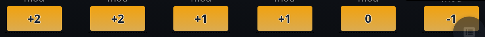
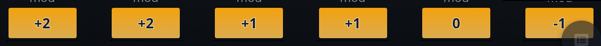
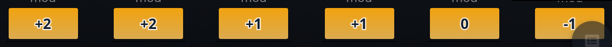
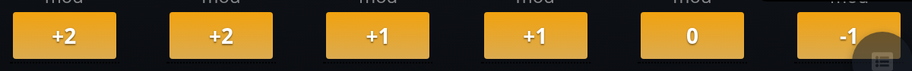

OrcPub · feature/style-guide · options, not built
Dark text outlines
The ability buttons with Dark Button Text on, dark theme, from the running branch at twice actual size. The strokes draw behind the letters (paint-order: stroke fill) so the dark letters keep their full thickness.




